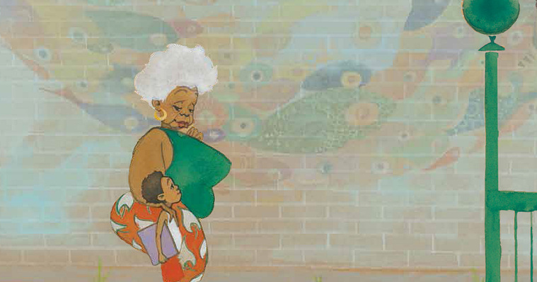
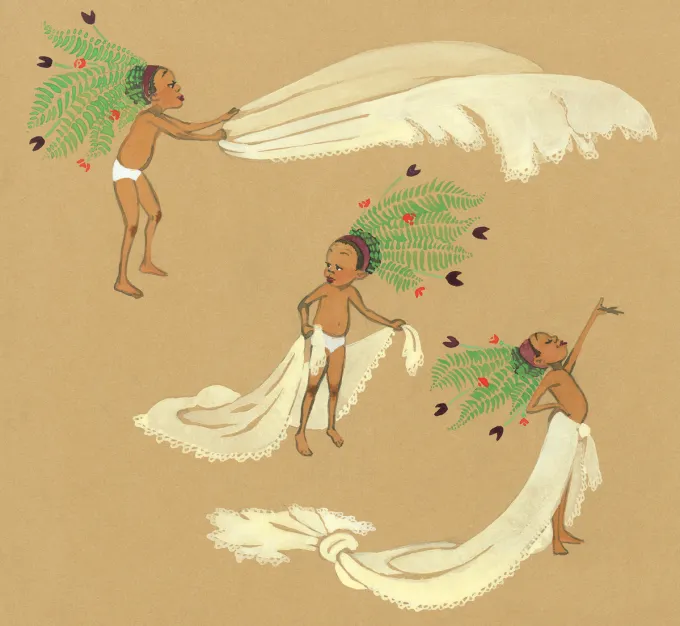
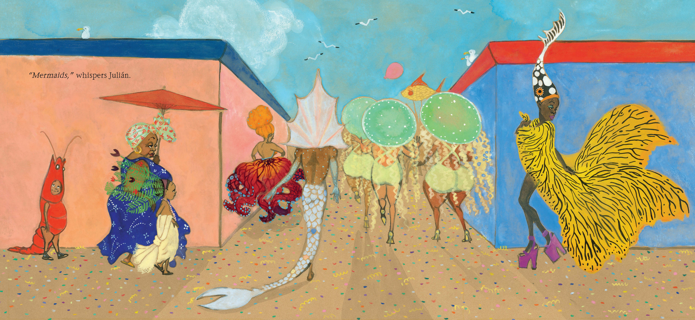
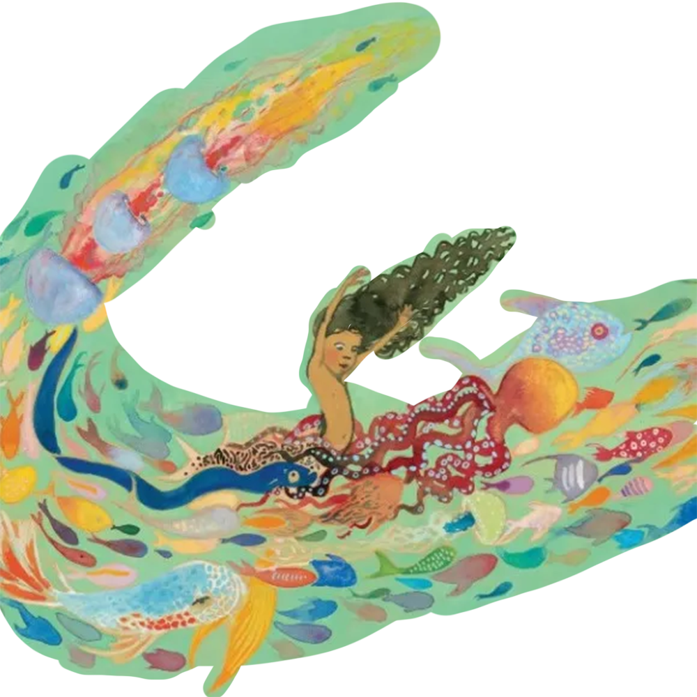

Welcome To The Interactive World of "Julián is a Mermaid"
What is the book about...
A young boy named Julián, captivated by women dressed as mermaids on the subway, daydreams of becoming one himself. Back home, he uses everyday items like a curtain and fern fronds to create a mermaid costume. His abuela, initially appearing disapproving, ultimately embraces his self-expression and takes him to a parade where everyone is dressed up. The book celebrates individuality, self-love, and the unconditional love of a family member.



